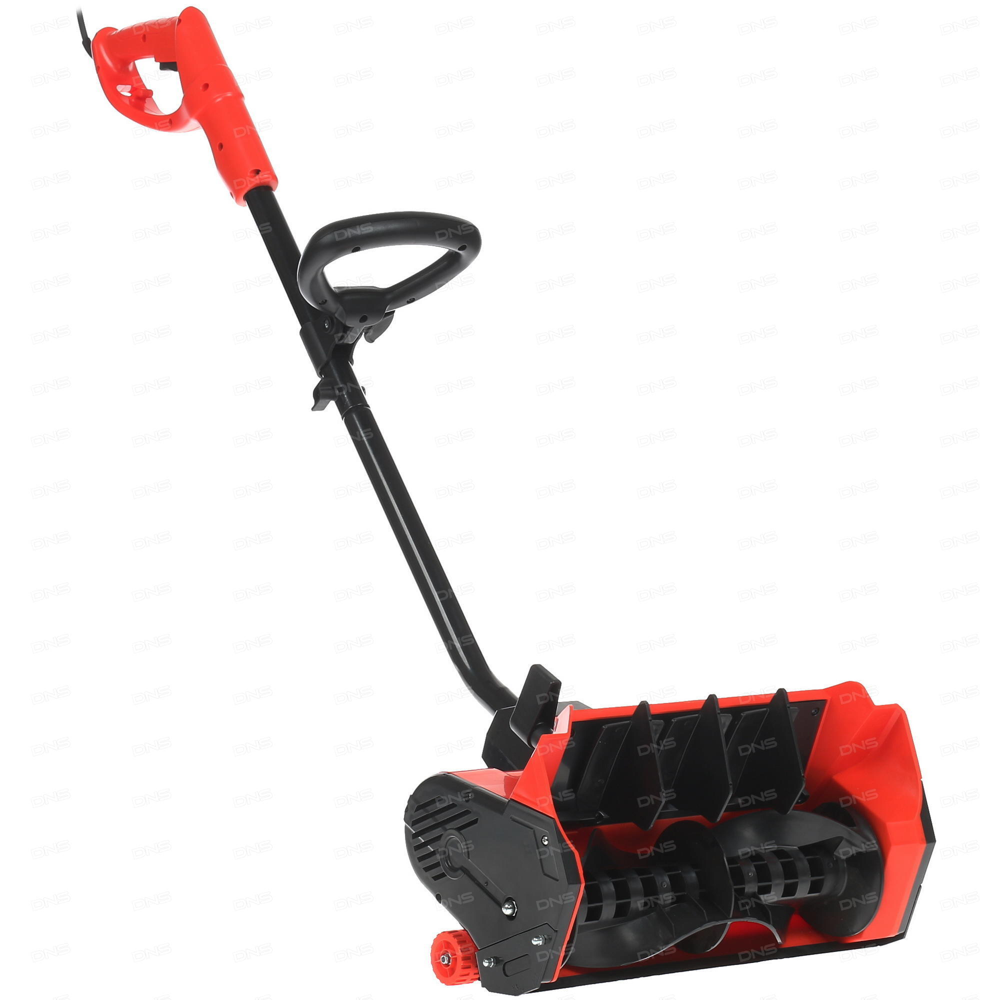
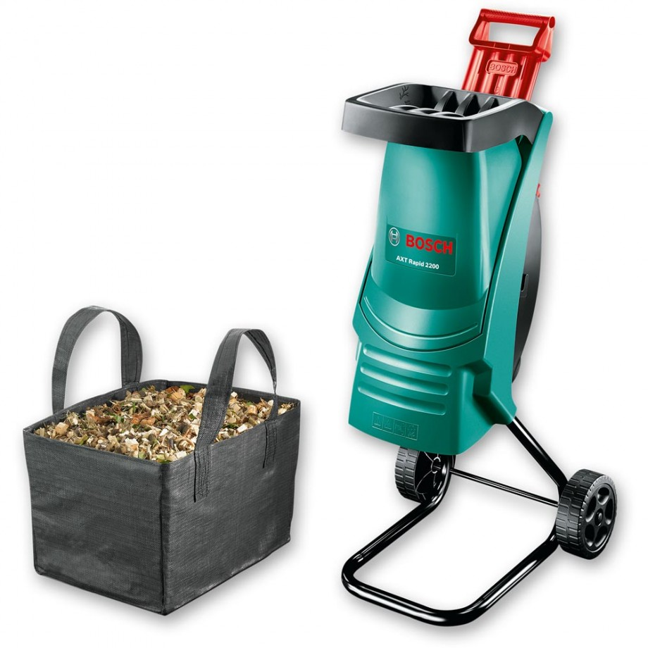

Снегоуборщик электрический DDE STE160

Описание товара
Снегоуборщик предназначен для уборки территорий от снега вокруг домов, гаражей, расчистки паркингов,
дорожек, тротуаров в городе и на даче, а также других открытых пространств, применяется
исключительно на ровных поверхностях с твёрдым покрытием.
Характеристики товара
- Тип - снегоуборщик
- Модель - DDE STE160
- Основной цвет - чёрный, красный
- Система шнеков - одноступенчатая
- Дальность выброса снега - 3 м
- Мощность двигателя - 1600 Вт
- Мощность двигателя - 2.1 л.с.
- Ширина ковша - 340 мм
- Высота ковша - 120 мм
- Материал шнека - резина
- Количество колес - 2
- Тип двигателя - электрический
- Тип питания - сеть 220 В
Подробное описание товара
Снегоуборщик предназначен для уборки территорий от снега вокруг домов, гаражей, расчистки паркингов,
дорожек, тротуаров в городе и на даче, а также других открытых пространств, применяется
исключительно на ровных поверхностях с твёрдым покрытием.
Измельчитель электрический BOSCH AXT Rapid 2000

Описание товара
Садовый измельчитель мусора Bosch AXT 2000 RAPID — прекрасный помощник для наведения порядка
на участке. Листья, сучки, остатки корней легко утилизируются, либо могут послужить в измельченном
виде удобрением для грядок. Данную модель отличает современный дизайн воронки со встроенным толкателем,
заметно увеличивающие скорость работы.
Характеристики товара
- Система измельчения - ножевая
- Материал корпуса - пластик
- Пропускная способность - 80 кг/ч
- Диаметр веток - 35 мм
- Скорость вращения - 3650 об/мин
- Особенности - 11.5 кг
- Тип двигателя - электрический
- Мощность электрического двигателя - 2 кВт
- Запуск двигателя - автоматический
- Напряжение - 220 В
- Количество колес - 2
- Тип двигателя - электрический
- Тип питания - сеть 220 В
Подробное описание товара
Садовый измельчитель мусора Bosch AXT 2000 RAPID — прекрасный помощник для наведения порядка
на участке. Листья, сучки, остатки корней легко утилизируются, либо могут послужить в измельченном
виде удобрением для грядок. Данную модель отличает современный дизайн воронки со встроенным толкателем,
заметно увеличивающие скорость работы.